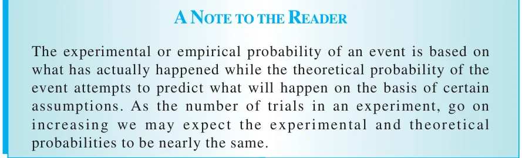

Library
·
Class 10 Mathematics
Probability · A Note to the Reader
←
☰
Probability
14.1 Probability a Theoretical Approach
Exercise 14.1
14.2 Summary
A Note to the Reader
→
◐
Chapter 14 · Probability
A Note to the Reader
1 figure

← Previous
14.2 Summary
Probability
Next →
Front Matter
Appendix